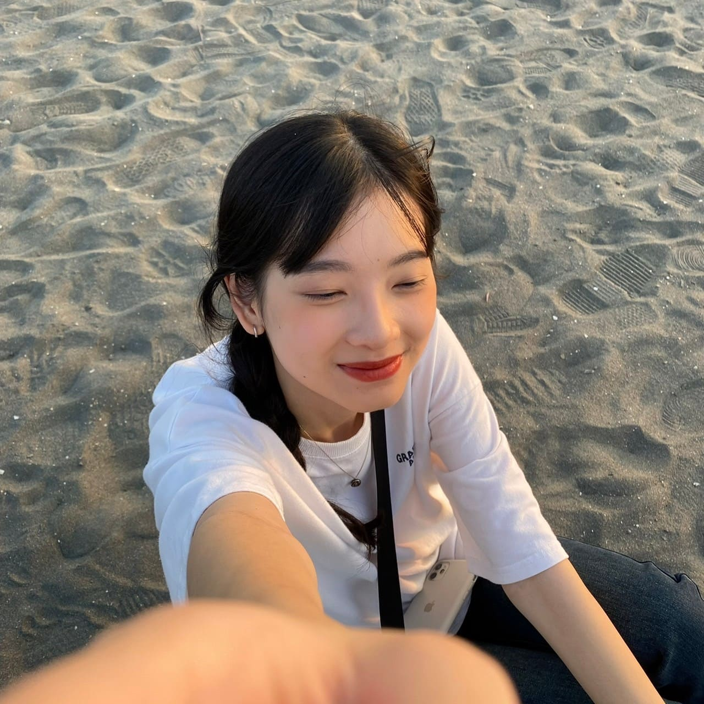
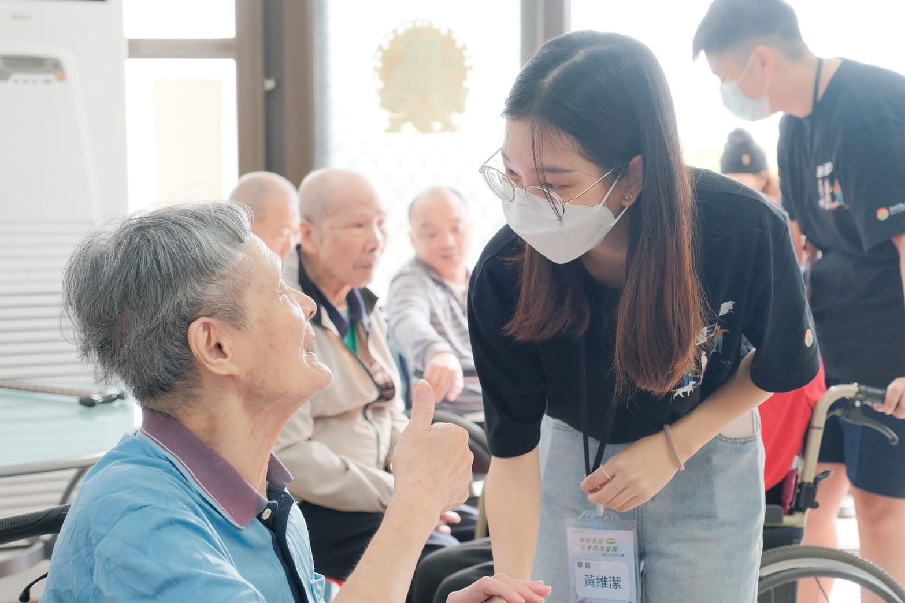
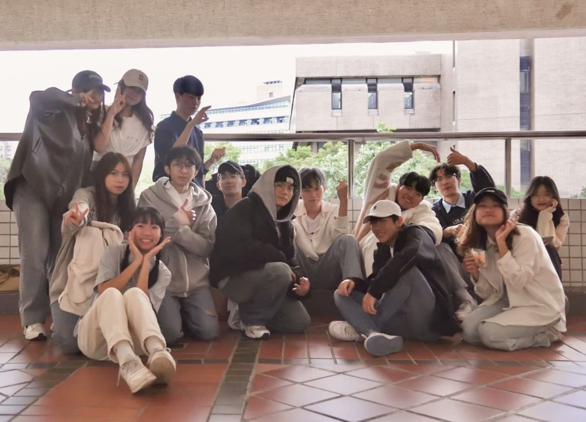
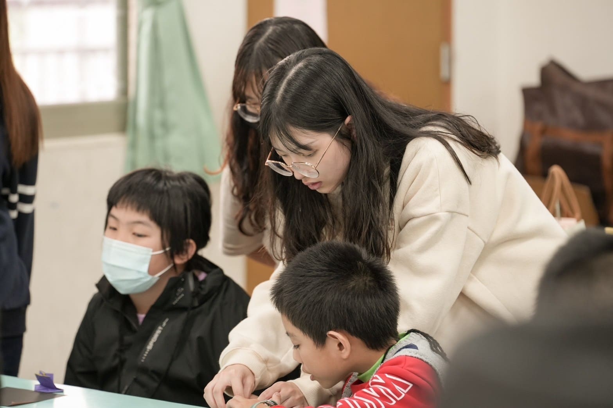
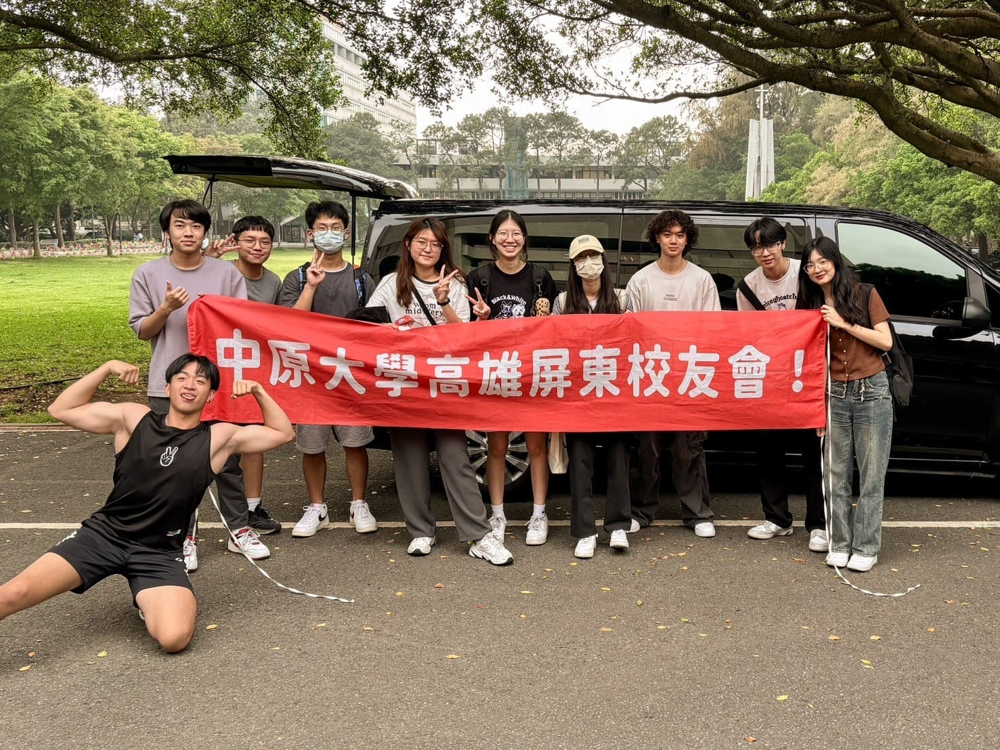
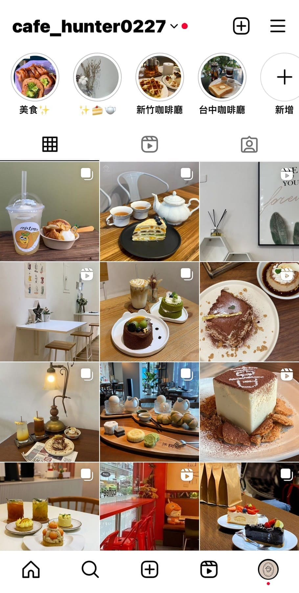

黃維潔
程式能力｜Programming ability
Python
Java
C++
HTML
其他技能｜Other Ability
影片剪輯｜Video Editing
文書處理｜Word Processing
靜物攝影｜Photography
校內活動經驗｜School Activity Experiences

大一｜管理學
因為碰巧與洄游創生的人員認識，因此藉這個機會與他們一起擔任長者照護營隊的志工。這是我首次參加這類型的營隊，透過訓練讓我更認識「高齡化」對現今社會的影響，也在這些訓練中認知到許多面對長者應該注意的細節，我覺得是一次難能可貴的經驗。

大二｜資管之夜音控組
因為不擅長跳舞跟唱歌，所以我選擇位居幕後。雖然不是第一次操作音盤，但面對這種攸關整個班級的活動我仍然超緊張。表演前我跟著班上的同學一起練習、彩排，體會到什麼叫做「台上十分鐘，台下十年功」的艱辛過程，後來順利的完成也取得好成績。課外活動經驗｜Extracurricular Experience

大二｜社團返鄉服務
返鄉服務可以說是社團舉辦過最費勁的活動了。身為隊輔組我要準備遊戲、模擬小朋友可能發生的狀況還有電訪。活動第一天我因為小朋友失控覺得很挫折，後來得知他有身理上的疾病。後來恨開心小朋友跟我們越來越熟識，而我也收到很多家長的正面回饋。

大二｜社團專車返鄉
因為很喜歡雄屏校友會的社團氛圍，所以大二時我決定擔任社團的幹部，圖中是我第一次擔任總協舉辦活動時的合影。專車返鄉這個活動讓我深刻地體會到了一個活動要辦得成功、辦的順利需要注意的細節有多多，需要大家的合作才能各方面都完善，擔任總協也讓我學著扛壓力、做決策。

大一至今｜社群經營
大一的時候因為修了電子商務應用這門課，所以開啟了我們經營社群的道路。我們主要是以中壢為核心去找尋有特色的咖啡廳並分享給大家。我在經營社群的過程中認識到更多增加曝光度的技巧，也發現自己對於這方面很感興趣。
高三至今｜影片記錄生活
比起用照片記錄生活，我更喜歡透過影片的方式將回憶記錄起來。會開始記錄生活的起因是因為高三最後一天待在學校了覺得很不捨，所以想記錄自己高中生活的尾聲，作為開啟新旅程前即將告別的紀錄。工讀經驗｜Work Experience
- 高三暑假-補習班工讀
- 大一-大學校園導覽
- 大二上-中原燈音控實習